- 00 开篇词 为什么每一位大前端从业者都应该学习Flutter？.md
- 01 预习篇 · 从0开始搭建Flutter工程环境.md
- 02 预习篇 · Dart语言概览.md
- 03 深入理解跨平台方案的历史发展逻辑.md
- 04 Flutter区别于其他方案的关键技术是什么？.md
- 05 从标准模板入手，体会Flutter代码是如何运行在原生系统上的.md
- 06 基础语法与类型变量：Dart是如何表示信息的？.md
- 07 函数、类与运算符：Dart是如何处理信息的？.md
- 08 综合案例：掌握Dart核心特性.md
- 09 Widget，构建Flutter界面的基石.md
- 10 Widget中的State到底是什么？.md
- 11 提到生命周期，我们是在说什么？.md
- 12 经典控件（一）：文本、图片和按钮在Flutter中怎么用？.md
- 13 经典控件（二）：UITableView_ListView在Flutter中是什么？.md
- 14 经典布局：如何定义子控件在父容器中排版的位置？.md
- 15 组合与自绘，我该选用何种方式自定义Widget？.md
- 16 从夜间模式说起，如何定制不同风格的App主题？.md
- 17 依赖管理（一）：图片、配置和字体在Flutter中怎么用？.md
- 18 依赖管理（二）：第三方组件库在Flutter中要如何管理？.md
- 19 用户交互事件该如何响应？.md
- 20 关于跨组件传递数据，你只需要记住这三招.md
- 21 路由与导航，Flutter是这样实现页面切换的.md
- 22 如何构造炫酷的动画效果？.md
- 23 单线程模型怎么保证UI运行流畅？.md
- 24 HTTP网络编程与JSON解析.md
- 25 本地存储与数据库的使用和优化.md
- 26 如何在Dart层兼容Android_iOS平台特定实现？（一）.md
- 27 如何在Dart层兼容Android_iOS平台特定实现？（二）.md
- 28 如何在原生应用中混编Flutter工程？.md
- 29 混合开发，该用何种方案管理导航栈？.md
- 30 为什么需要做状态管理，怎么做？.md
- 31 如何实现原生推送能力？.md
- 32 适配国际化，除了多语言我们还需要注意什么_.md
- 33 如何适配不同分辨率的手机屏幕？.md
- 34 如何理解Flutter的编译模式？.md
- 35 Hot Reload是怎么做到的？.md
- 36 如何通过工具链优化开发调试效率？.md
- 37 如何检测并优化Flutter App的整体性能表现？.md
- 38 如何通过自动化测试提高交付质量？.md
- 39 线上出现问题，该如何做好异常捕获与信息采集？.md
- 40 衡量Flutter App线上质量，我们需要关注这三个指标.md
- 41 组件化和平台化，该如何组织合理稳定的Flutter工程结构？.md
- 42 如何构建高效的Flutter App打包发布环境？.md
- 43 如何构建自己的Flutter混合开发框架（一）？.md
- 44 如何构建自己的Flutter混合开发框架（二）？.md
- 特别放送 温故而知新，与你说说专栏的那些思考题.md
- 结束语 勿畏难，勿轻略.md
14 经典布局：如何定义子控件在父容器中排版的位置？
你好，我是陈航。
在前面两篇文章中，我们一起学习了构建视图的基本元素：文本、图片和按钮，用于展示一组连续视图元素的ListView，以及处理多重嵌套的可滚动视图的CustomScrollView。
在Flutter中，一个完整的界面通常就是由这些小型、单用途的基本控件元素依据特定的布局规则堆砌而成的。那么今天，我就带你一起学习一下，在Flutter中，搭建出一个漂亮的布局，我们需要了解哪些布局规则，以及这些规则与其他平台类似概念的差别在哪里。希望这样的设计，可以帮助你站在已有经验的基础上去高效学习Flutter的布局规则。
我们已经知道，在Flutter中一切皆Widget，那么布局也不例外。但与基本控件元素不同，布局类的Widget并不会直接呈现视觉内容，而是作为承载其他子Widget的容器。
这些布局类的Widget，内部都会包含一个或多个子控件，并且都提供了摆放子控件的不同布局方式，可以实现子控件的对齐、嵌套、层叠和缩放等。而我们要做的就是，通过各种定制化的参数，将其内部的子Widget依照自己的布局规则放置在特定的位置上，最终形成一个漂亮的布局。
Flutter提供了31种布局Widget，对布局控件的划分非常详细，一些相同（或相似）的视觉效果可以通过多种布局控件实现，因此布局类型相比原生Android、iOS平台多了不少。比如，Android布局一般就只有FrameLayout、LinearLayout、RelativeLayout、GridLayout和TableLayout这5种，而iOS的布局更少，只有Frame布局和自动布局两种。
为了帮你建立起对布局类Widget的认知，了解基本布局类Widget的布局特点和用法，从而学以致用快速上手开发，在今天的这篇文章中，我特意挑选了几类在开发Flutter应用时，最常用也最有代表性的布局Widget，包括单子Widget布局、多子Widget布局、层叠Widget布局，与你展开介绍。
掌握了这些典型的Widget，你也就基本掌握了构建一个界面精美的App所需要的全部布局方式了。接下来，我们就先从单子Widget布局聊起吧。
单子Widget布局：Container、Padding与Center
单子Widget布局类容器比较简单，一般用来对其唯一的子Widget进行样式包装，比如限制大小、添加背景色样式、内间距、旋转变换等。这一类布局Widget，包括Container、Padding与Center三种。
Container，是一种允许在其内部添加其他控件的控件，也是UI框架中的一个常见概念。
在Flutter中，Container本身可以单独作为控件存在（比如单独设置背景色、宽高），也可以作为其他控件的父级存在：Container可以定义布局过程中子Widget如何摆放，以及如何展示。与其他框架不同的是，Flutter的Container仅能包含一个子Widget。
所以，对于多个子Widget的布局场景，我们通常会这样处理：先用一个根Widget去包装这些子Widget，然后把这个根Widget放到Container中，再由Container设置它的对齐alignment、边距padding等基础属性和样式属性。
接下来，我通过一个示例，与你演示如何定义一个Container。
在这个示例中，我将一段较长的文字，包装在一个红色背景、圆角边框的、固定宽高的Container中，并分别设置了Container的外边距（距离其父Widget的边距）和内边距（距离其子Widget的边距）：
Container(
child: Text('Container（容器）在UI框架中是一个很常见的概念，Flutter也不例外。'),
padding: EdgeInsets.all(18.0), // 内边距
margin: EdgeInsets.all(44.0), // 外边距
width: 180.0,
height:240,
alignment: Alignment.center, // 子Widget居中对齐
decoration: BoxDecoration( //Container样式
color: Colors.red, // 背景色
borderRadius: BorderRadius.circular(10.0), // 圆角边框
),
)
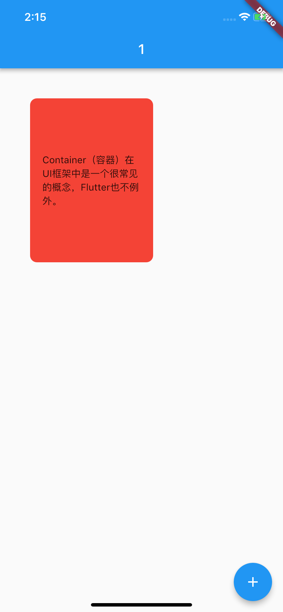
图1 Container示例
如果我们只需要将子Widget设定间距，则可以使用另一个单子容器控件Padding进行内容填充：
Padding(
padding: EdgeInsets.all(44.0),
child: Text('Container（容器）在UI框架中是一个很常见的概念，Flutter也不例外。'),
);
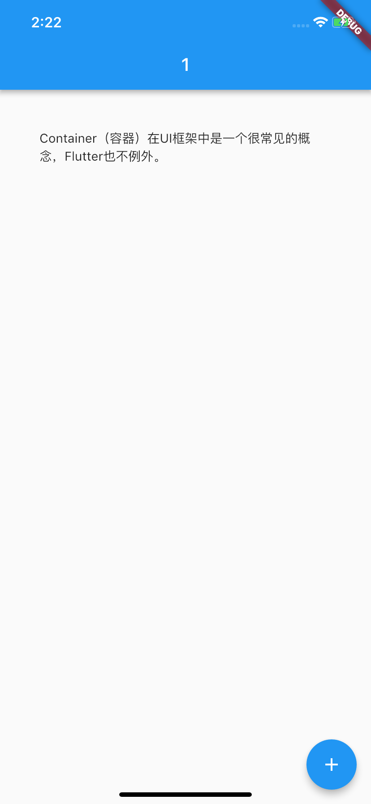
图2 Padding示例
在需要设置内容间距时，我们可以通过EdgeInsets的不同构造函数，分别制定四个方向的不同补白方式，如均使用同样数值留白、只设置左留白或对称方向留白等。如果你想更深入地了解这部分内容，可以参考这个API文档。
接下来，我们再来看看单子Widget布局容器中另一个常用的容器Center。正如它的名字一样，Center会将其子Widget居中排列。
比如，我们可以把一个Text包在Center里，实现居中展示：
Scaffold(
body: Center(child: Text("Hello")) // This trailing comma makes auto-formatting nicer for build methods.
);
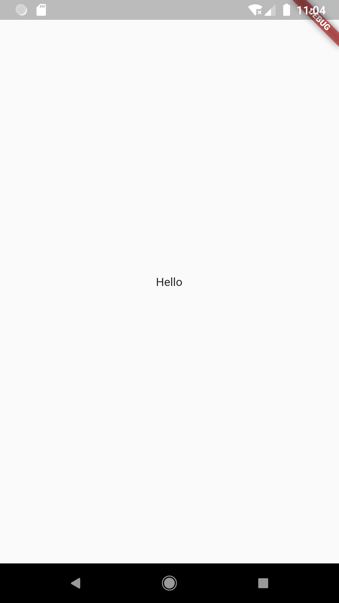
图3 Center示例
需要注意的是，为了实现居中布局，Center所占据的空间一定要比其子Widget要大才行，这也是显而易见的：如果Center和其子Widget一样大，自然就不需要居中，也没空间居中了。因此Center通常会结合Container一起使用。
现在，我们结合Container，一起看看Center的具体使用方法吧。
Container(
child: Center(child: Text('Container（容器）在UI框架中是一个很常见的概念，Flutter也不例外。')),
padding: EdgeInsets.all(18.0), // 内边距
margin: EdgeInsets.all(44.0), // 外边距
width: 180.0,
height:240,
decoration: BoxDecoration( //Container样式
color: Colors.red, // 背景色
borderRadius: BorderRadius.circular(10.0), // 圆角边框
),
);
可以看到，我们通过Center容器实现了Container容器中alignment: Alignment.center的效果。
事实上，为了达到这一效果，Container容器与Center容器底层都依赖了同一个容器Align，通过它实现子Widget的对齐方式。Align的使用也比较简单，如果你想深入了解的话，可以参考官方文档，这里我就不再过多介绍了。
接下来，我们再看看多子Widget布局的三种方式，即Row、Column与Expanded。
多子Widget布局：Row、Column与Expanded
对于拥有多个子Widget的布局类容器而言，其布局行为无非就是两种规则的抽象：水平方向上应该如何布局、垂直方向上应该如何布局。
如同Android的LinearLayout、前端的Flex布局一样，Flutter中也有类似的概念，即将子Widget按行水平排列的Row，按列垂直排列的Column，以及负责分配这些子Widget在布局方向（行/列）中剩余空间的Expanded。
Row与Column的使用方法很简单，我们只需要将各个子Widget按序加入到children数组即可。在下面的代码中，我们把4个分别设置了不同的颜色和宽高的Container加到Row与Column中：
//Row的用法示范
Row(
children: <Widget>[
Container(color: Colors.yellow, width: 60, height: 80,),
Container(color: Colors.red, width: 100, height: 180,),
Container(color: Colors.black, width: 60, height: 80,),
Container(color: Colors.green, width: 60, height: 80,),
],
);
//Column的用法示范
Column(
children: <Widget>[
Container(color: Colors.yellow, width: 60, height: 80,),
Container(color: Colors.red, width: 100, height: 180,),
Container(color: Colors.black, width: 60, height: 80,),
Container(color: Colors.green, width: 60, height: 80,),
],
);
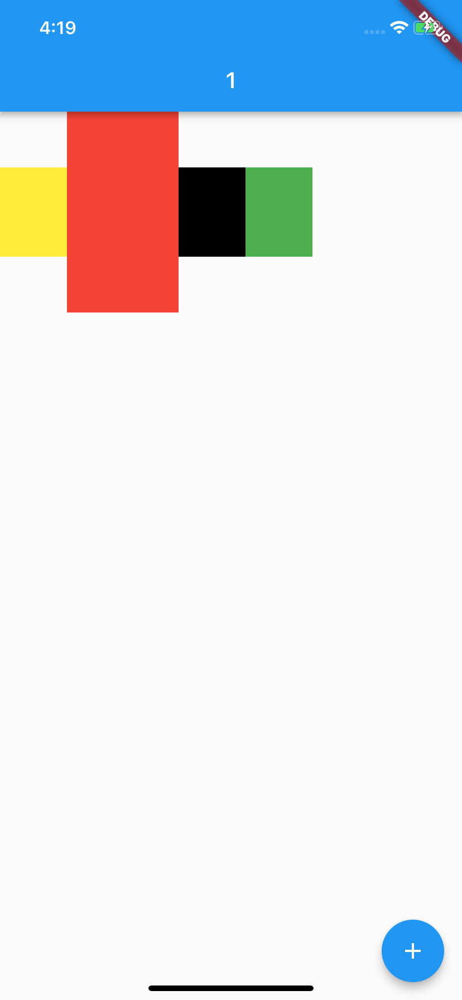
(a)Row示例
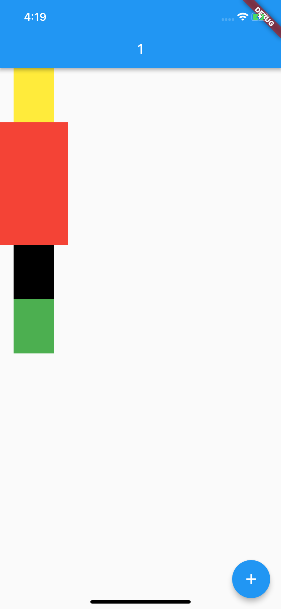
(b)Column示例
图4 Row与Column示例
可以看到，单纯使用Row和Column控件，在子Widget的尺寸较小时，无法将容器填满，视觉样式比较难看。对于这样的场景，我们可以通过Expanded控件，来制定分配规则填满容器的剩余空间。
比如，我们希望Row组件（或Column组件）中的绿色容器与黄色容器均分剩下的空间，于是就可以设置它们的弹性系数参数flex都为1，这两个Expanded会按照其flex的比例（即1：1）来分割剩余的Row横向（Column纵向）空间：
Row(
children: <Widget>[
Expanded(flex: 1, child: Container(color: Colors.yellow, height: 60)), //设置了flex=1，因此宽度由Expanded来分配
Container(color: Colors.red, width: 100, height: 180,),
Container(color: Colors.black, width: 60, height: 80,),
Expanded(flex: 1, child: Container(color: Colors.green,height: 60),)/设置了flex=1，因此宽度由Expanded来分配
],
);
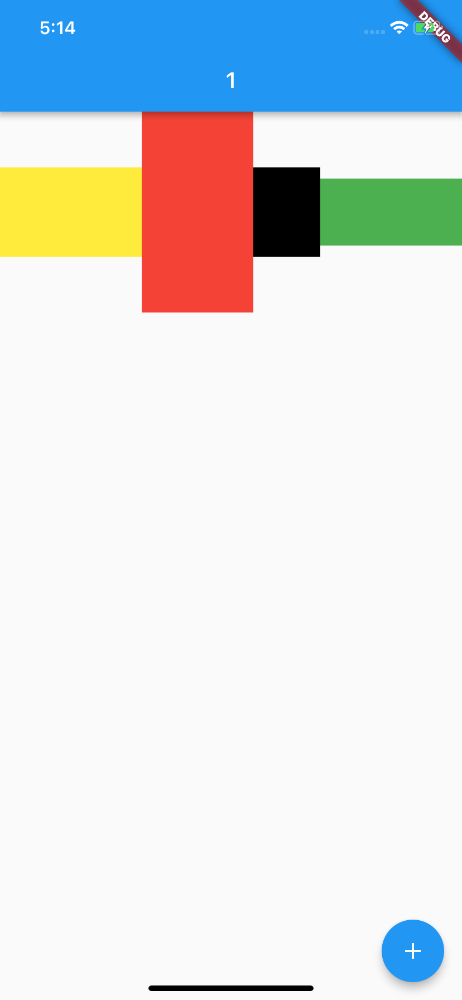
图5 Expanded控件示例
于Row与Column而言，Flutter提供了依据坐标轴的布局对齐行为，即根据布局方向划分出主轴和纵轴：主轴，表示容器依次摆放子Widget的方向；纵轴，则是与主轴垂直的另一个方向。
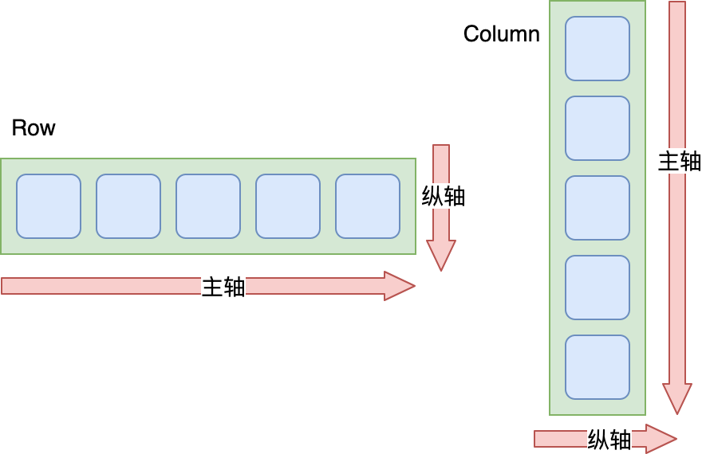
图6 Row和Column控件的主轴与纵轴
我们可以根据主轴与纵轴，设置子Widget在这两个方向上的对齐规则mainAxisAlignment与crossAxisAlignment。比如，主轴方向start表示靠左对齐、center表示横向居中对齐、end表示靠右对齐、spaceEvenly表示按固定间距对齐；而纵轴方向start则表示靠上对齐、center表示纵向居中对齐、end表示靠下对齐。
下图展示了在Row中设置不同方向的对齐规则后的呈现效果：
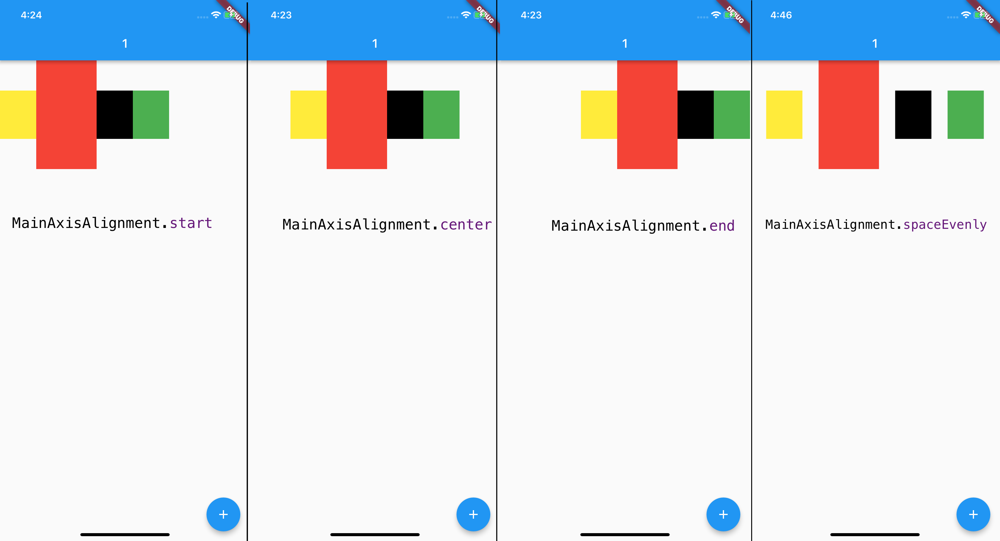
图7 Row的主轴对齐方式
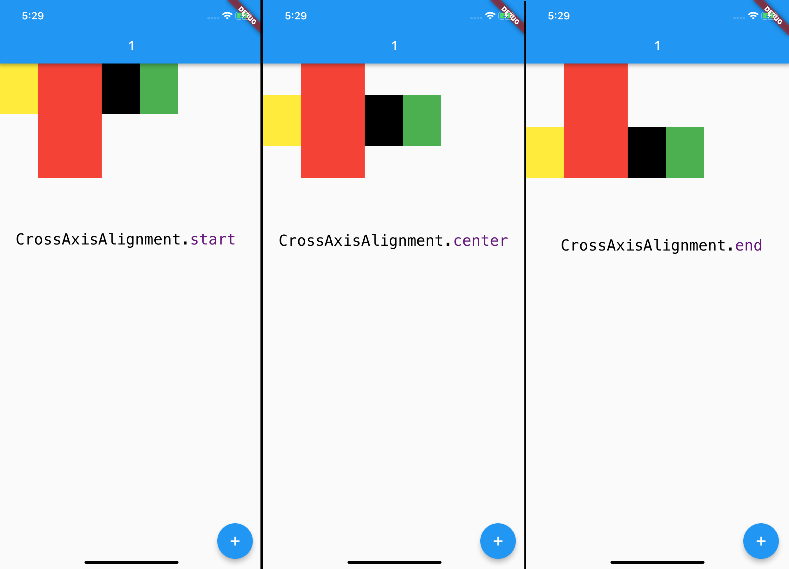
图8 Row的纵轴对齐方式
Column的对齐方式也是类似的，我就不再过多展开了。
这里需要注意的是，对于主轴而言，Flutter默认是让父容器决定其长度，即尽可能大，类似Android中的match_parent。
在上面的例子中，Row的宽度为屏幕宽度，Column的高度为屏幕高度。主轴长度大于所有子Widget的总长度，意味着容器在主轴方向的空间比子Widget要大，这也是我们能通过主轴对齐方式设置子Widget布局效果的原因。
如果想让容器与子Widget在主轴上完全匹配，我们可以通过设置Row的mainAxisSize参数为MainAxisSize.min，由所有子Widget来决定主轴方向的容器长度，即主轴方向的长度尽可能小，类似Android中的wrap_content：
Row(
mainAxisAlignment: MainAxisAlignment.spaceEvenly, //由于容器与子Widget一样宽，因此这行设置排列间距的代码并未起作用
mainAxisSize: MainAxisSize.min, //让容器宽度与所有子Widget的宽度一致
children: <Widget>[
Container(color: Colors.yellow, width: 60, height: 80,),
Container(color: Colors.red, width: 100, height: 180,),
Container(color: Colors.black, width: 60, height: 80,),
Container(color: Colors.green, width: 60, height: 80,),
],
)
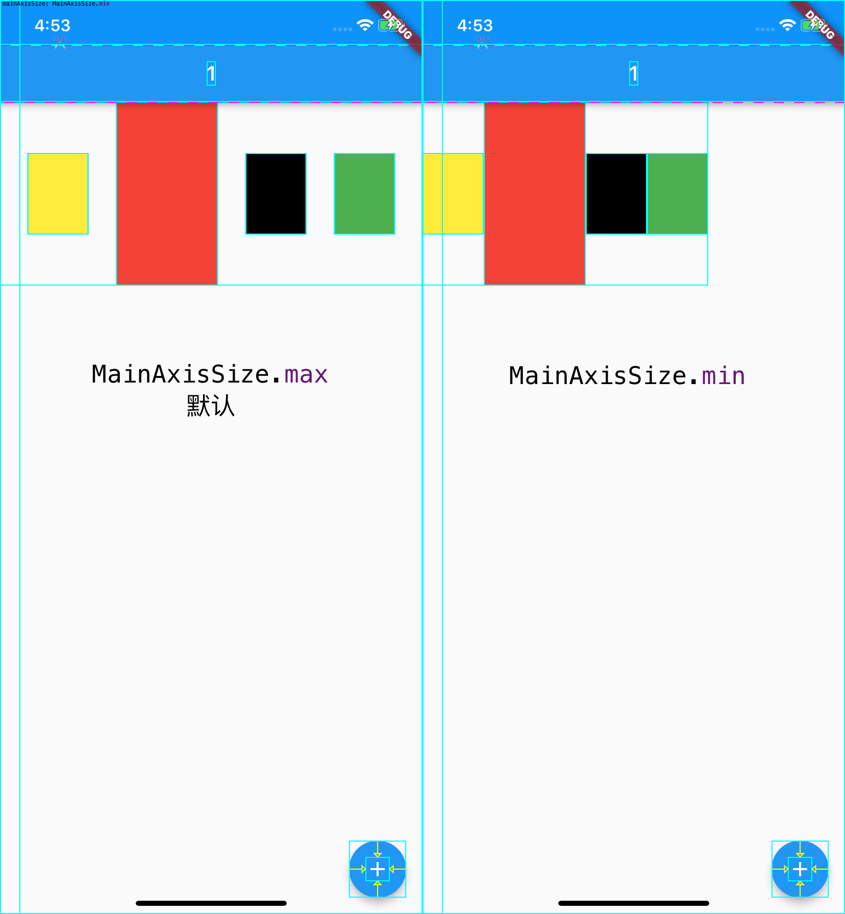
图9 Row 的主轴大小
可以看到，我们设置了主轴大小为MainAxisSize.min之后，Row的宽度变得和其子Widget一样大，因此再设置主轴的对齐方式也就不起作用了。
层叠Widget布局：Stack与Positioned
有些时候，我们需要让一个控件叠加在另一个控件的上面，比如在一张图片上放置一段文字，又或者是在图片的某个区域放置一个按钮。这时候，我们就需要用到层叠布局容器Stack了。
Stack容器与前端中的绝对定位、Android中的Frame布局非常类似，子Widget之间允许叠加，还可以根据父容器上、下、左、右四个角的位置来确定自己的位置。
Stack提供了层叠布局的容器，而Positioned则提供了设置子Widget位置的能力。接下来，我们就通过一个例子来看一下Stack和Positioned的具体用法吧。
在这个例子中，我先在Stack中放置了一块300_300的黄色画布，随后在(18,18)处放置了一个50_50的绿色控件，然后在(18,70)处放置了一个文本控件。
Stack(
children: <Widget>[
Container(color: Colors.yellow, width: 300, height: 300),//黄色容器
Positioned(
left: 18.0,
top: 18.0,
child: Container(color: Colors.green, width: 50, height: 50),//叠加在黄色容器之上的绿色控件
),
Positioned(
left: 18.0,
top:70.0,
child: Text("Stack提供了层叠布局的容器"),//叠加在黄色容器之上的文本
)
],
)
试着运行一下，可以看到，这三个子Widget都按照我们预定的规则叠加在一起了。
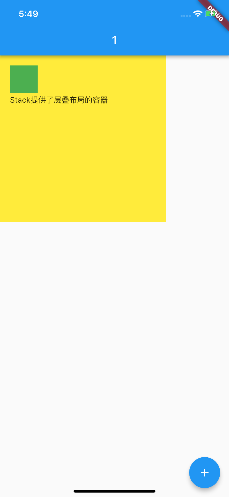
图10 Stack与Positioned容器示例
Stack控件允许其子Widget按照创建的先后顺序进行层叠摆放，而Positioned控件则用来控制这些子Widget的摆放位置。需要注意的是，Positioned控件只能在Stack中使用，在其他容器中使用会报错。
总结
Flutter的布局容器强大而丰富，可以将小型、单用途的基本视觉元素快速封装成控件。今天我选取了Flutter中最具代表性，也最常用的几类布局Widget，与你介绍了构建一个界面精美的App所需要的布局概念。
接下来，我们简单回顾一下今天的内容，以便加深理解与记忆：
首先，我们认识了单子容器Container、Padding与Center。其中，Container内部提供了间距、背景样式等基础属性，为子Widget的摆放方式，及展现样式都提供了定制能力。而Padding与Center提供的功能，则正如其名一样简洁，就是对齐与居中。
然后，我们深入学习了多子Widget布局中的Row和Column，各子Widget间对齐的规则，以及容器自身扩充的规则，以及如何通过Expanded控件使用容器内部的剩余空间，
最后，我们学习了层叠布局Stack，以及与之搭配使用的，定位子Widget位置的Positioned容器，你可以通过它们，实现多个控件堆放的布局效果。
通过今天的文章，相信你已经对如何搭建App的界面有了足够的知识储备，所以在下一篇文章中，我会通过一些实际的例子，带你认识在Flutter中，如何通过这些基本控件与布局规则，实现好看的界面。
思考题
最后，我给你留下一道思考题吧。
Row与Column自身的大小是如何决定的？当它们嵌套时，又会出现怎样的情况呢？
欢迎你在评论区给我留言分享你的观点，我会在下一篇文章中等待你！感谢你的收听，也欢迎你把这篇文章分享给更多的朋友一起阅读。
© 2019 - 2023 Liangliang Lee. Powered by gin and hexo-theme-book.